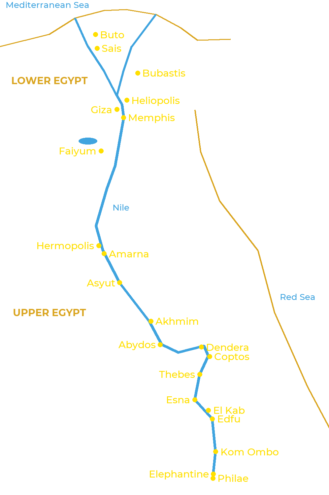

Ancient Egypt stretched along the Nile for more than a thousand kilometres. In the north, the river
splits into several branches to form the Delta: this is Lower Egypt. To the south lies the valley,
Upper Egypt, as far as the First Cataract at Aswan. Every city had its gods, and the greatest
religious centres gave their names to the cosmogonies.

The main cult centres, from the Delta to the First Cataract
Lower Egypt
Buto: Wadjet, the cobra goddess who protected the North.
Sais: Neith; capital of the 26th Dynasty.
Bubastis: Bastet, whose great festival Herodotus described.
Heliopolis: Atum and Re; birthplace of the most widespread cosmogony.
Giza: the great pyramids and the Sphinx, worshipped as Harmachis.
Memphis: Ptah, Sekhmet, Nefertem and the Apis bull; necropolis of Sokar at Saqqara.
Faiyum: Sobek and his sacred crocodiles.
Upper Egypt
Hermopolis: Thoth and the Ogdoad.
Amarna: the Aten; the capital founded by Akhenaten.
Asyut: Wepwawet, “the opener of the ways”.
Akhmim and Coptos: Min, god of fertility and of the desert tracks.
Abydos: Osiris, whose mysteries were celebrated there.
Dendera: Hathor.
Thebes: Amun, Mut and Khonsu (Karnak and Luxor), Montu; royal necropolises on the west bank.
Esna: Khnum, Neith and Heka.
El Kab: Nekhbet, the vulture goddess who protected the South.
Edfu: Horus.
Kom Ombo: Sobek and Horus the Elder, in a double temple.
Elephantine: Khnum, Satet and Anuket, guardians of the flood.
Philae: Isis, whose temple stayed open until the 6th century.